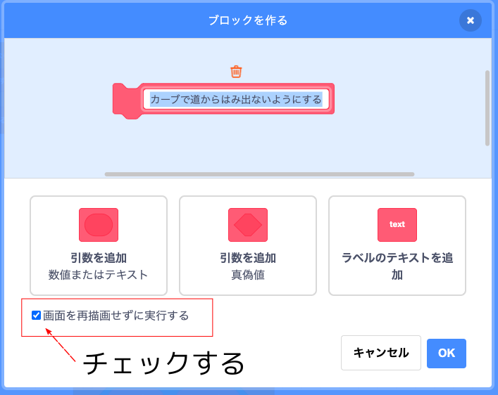
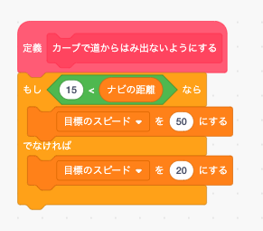
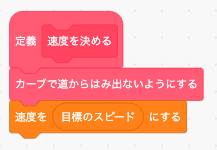

このままではカーブで道からはみ出してしまいますので、カーブ手前で減速しましょう。 そのために「ナビゲータ」の情報を使います。
本物の車の場合はGPSやジャイロセンサーなどによってナビゲータの情報を取得しますが、このシュミレータでは「ナビの距離」「ナビの方向」変数ブロックでナビゲータの情報を取得できます。
「ナビの距離」は次のカーブまでの距離(メートル)が取得できます。
「ナビの方向」は左カーブか右カーブかを次の数値で取得できます。
| 「ナビの方向」 の数値 | 内容 |
|---|---|
| 0 | 左カーブ |
| 1 | 直進 |
| 2 | 右カーブ |
ではナビゲータの情報( ＝ 変数)を使ってどのようにプログラムをすればよいのでしょうか？ なんとなく「もし〜なら」ブロックをつかえば出来そうな気がしますが条件がよく分かりませんね。
ちょっと難しい話になりますが、今回の「ナビの距離」や「ナビの方向」みたいに手元にある情報がたくさんある時は"ミーシー(MECE)思考"というプログラミングテクニックを使って「もし〜なら」ブロックの条件を考えるのが常套(じょうとう)手段になります。
このミーシー思考は "手元にある情報を全て、もれがないように組み合わせて条件を考える" という方法です。
それで今回は「ナビの距離」「ナビの方向」の2つの情報から「目標のスピード」変数ブロックにセットする数字を決めます。 そこで「ナビの距離」「ナビの方向」をもれなく組み合わせて、まず次のような表を作ります。 なお「ナビの距離」は15メートルより大きければ"カーブまで遠い"、15メートル以下なら"カーブまで近い"と判断することにしました。
| 「ナビの距離」 | 「ナビの方向」 | 「目標のスピード」 |
|---|---|---|
| 15 より大 (遠い) | 0 (左) | 50 |
| 1 (直進) | 50 | |
| 2 (右) | 50 | |
| 15 以下 (近い) | 0 (左) | 20 |
| 1 (直進) | 20 | |
| 2 (右) | 20 |
この表をみると「目標のスピード」変数ブロックの値を決めているのは実は「ナビの距離」だけで「ナビの方向」の情報は使っていないことが分かります。 さらに"15 以下"の条件は「もし〜ならば、でなければ」ブロックを使って置き換えることが出来ますので、上の表は次のように簡単にできます。
| 「ナビの距離」 | 目標のスピード |
|---|---|
| 15 より大(遠い) | 50 |
| でなければ(近い) | 20 |
これで「もし〜ならば、でなければ」ブロックの条件が分かりましたので早速プログラミングしてみましょう。
まず「カーブで道からはみ出さないようにする」というオリジナルブロックを作ります。 このブロックは繰り返し使いますので「画面を再描画せずに実行する」をチェックしてください。
「カーブで道からはみ出さないようにする」ブロックの中身は上の表から次のようになります。 表の内容と「もし〜なら」ブロックの条件がまったく同じになっていますね。
あとは「速度を決める」ブロックを次のように変更すればOKです。
では「緑の旗」ボタンを押してテストしてみましょう。 今度はちゃんと動いたと思います。
正しく動いたら「ストップ」ボタンを押してタイトル画面に戻って下さい。
※ 走行画面は動作が重いのでプログラミングはタイトル画面でした方が良いです。
チャレンジ
今回は「ナビの方向」の情報は使いませんでしたが、右カーブと左カーブでスピードが変わるようなプログラムを作ってみましょう。